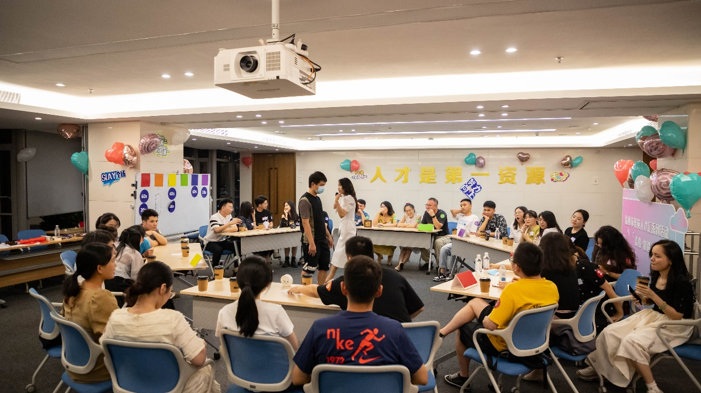
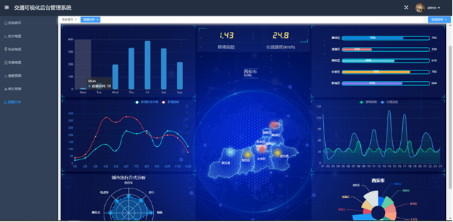

|
Longji Huang (黄龙吉)
黄龙吉，男，1996 年生，副教授，工学博士，硕士生导师。担任多项社会兼职，包括计算机学会大数据专委委员、计算机学会数据库专委委员、江苏省对外科学技术促进会青年智库专家、江苏省对外科学技术促进会会员、计算机学会人工智能与模式识别专委委员等。2024 年 6
月获西安电子科技大学工学博士学位。2024 年 8 月加入苏州工学院计算机科学与工程学院，从事教学与科研工作。主要研究方向包括1）时空大数据建模、2）大数据挖掘技术在智慧能源、智慧交通以及智慧城市等领域的应用。在包括
TKDD、KBS、Applied Intelligence、ACM TIST 以及 ACM SIGSPATIAL 等著名国际期刊和国际会议上发表 SCI 论文 10
余篇，其中第一作者 7 篇（其中 3 篇中科院一区，ACM Trans 2篇，CCF B 类 1 篇），担任Journal of Big Data，Knowledge and Information Systems以及VLDB等多个期刊审稿人。
|
简介/About
-
Longji Huang, male, born in 1996, is an Associate Professor at the School of Computer Science and Engineering, SZUT. He obtained his Ph.D. in Engineering from Xidian University in June 2024 and began his academic career in August 2024, specializing in spatiotemporal big data modeling and the application of big data mining technologies in smart energy, smart transportation, and smart city systems. He actively contributes to academic communities as a member of multiple technical committees, including the Technical Committee on Big Data, the Technical Committee on Databases, and the Technical Committee on Artificial Intelligence and Pattern Recognition under the China Computer Federation (CCF). Additionally, he serves as a Young Expert of the Youth Think Tank at the Jiangsu Association for Promotion of International Science and Technology. I have authored over 10 SCI-indexed papers in internationally renowned journals and conferences such as ACM Transactions on Knowledge Discovery from Data (TKDD), Knowledge-Based Systems (KBS), Applied Intelligence, ACM Transactions on Intelligent Systems and Technology (TIST), and ACM SIGSPATIAL. Among these, seven are first-authored publications, including three papers in CAS Tier 1 journals, two in ACM Transactions series, and one CCF-B ranked paper. His expertise is further recognized through My role as a peer reviewer for leading journals like Journal of Big Data, Knowledge and Information Systems, and The VLDB Journal. His research bridges theoretical innovation with practical applications, aiming to advance intelligent solutions for urban and industrial challenges through data-driven methodologies.
论文发表/Publication
- LSTGCN: Inductive Spatial Temporal Imputation Using Long Short Term
Dependencies.
Longji Huang, J Huang, H Li, J Cui.
ACM Transactions on Knowledge Discovery from Data. Early access, 2024. - Robust spatial temporal imputation based on spatio-temporal generative
adversarial nets.
Longji Huang, J Huang, H Li, J Cui.
Knowledge-Based Systems. 2023, 279, 110919. - Deep reinforcement learning-based trajectory pricing on ride-hailing
platforms.
J Huang, Longji Huang*, M Liu, H Li, Q Tan, X Ma, J Cui, DS Huang.
ACM Transactions on Intelligent Systems and Technology (TIST) 13 (3), 1-19. - Multi-dimensional spatial–temporal graph convolution for urban sensors
imputation and enhancement.
Longji Huang, J Huang, H Li, J Cui.
Knowledge-Based Systems. 2023, 278, 110856. - Long-term multi-dimensional spatial-temporal graph convolution for urban
sensors imputation and augmentation.
Longji Huang, J Huang, H Li.
Proceedings of the 30th International Conference on Advances in Geographic Information Systems. - Long-term sequence dependency capture for spatiotemporal graph
modeling.
Longji Huang, J Huang, P Chen, H Li, J Cui.
Knowledge-Based Systems. 2023, 278, 110818. - Driving Route Recommendation With Profit Maximization in Ride
Sharing.
Longji Huang, Jianbin Huang and etc
The Computer Journal, 2020,63(11):1607-1623. - Detecting Urban Anomalies Using Factor Analysis and One Class Support Vector
Machine.
Cong Lu, Jianbin Huang, Longji Huang.
The Computer Journal, Volume 66, Issue 2, February 2023, Pages 373–383. - Monte carlo tree search for dynamic bike repositioning in bike-sharing
systems.
J Huang, Q Tan, H Li, A Li, Longji Huang.
Applied Intelligence, 1-16. - Monte carlo tree search for dynamic bike repositioning in bike-sharing
systems.
Ruijie Qi, Jianbin Huang, He Li, Qinglin Tan, Longji Huang, Jiangtao Cui.
arXiv preprint arXiv:2203.05961. - Central Station-Based Demand Prediction for Determining Target Inventory in a
Bike-Sharing System.
Jianbin Huang, Heli Sun, He Li, Longji Huang, Ao Li, Xiangyu Wang.
The Computer Journal, Volume 65, Issue 3, March 2022, Pages 573–588. - Multi-View Spatial–Temporal Graph Neural Network for Traffic
Prediction.
He Li, D Jin, X Li, H Huang, J Yun, Longji Huang.
The Computer Journal, Volume 66, Issue 10, October 2023, Pages 2393–2408.
教育/Education
|
|
Master and Ph.D. in Computer Science, School of Computer Science and Technology,
Xidian University |
获奖/Awards
- [2024] 西安电子科技大学优秀研究生干部，Xidian University.
- [2023] 西安电子科技大学优秀研究生，Xidian University；Tencent Scholarship；First Prize Scholarship of Xidian University (Top 5%).
- [2022] 西安电子科技大学优秀研究生干部，Xidian University；First Prize Scholarship of Xidian University (Top 5%).
- [Before] 互联网+省赛银奖、美国数学建模Honorable奖、国家奖学金等
团队介绍/Team

智慧城市与交通数据挖掘组（SmartLab）
研究
1.-时空数据建模（预测（graph、grid）与补全（点云、graph、grid、image））；
2.-时空大数据自监督学习；时空图对比学习、时序patch mask重建；增强中间嵌入；
3.-大数据下的城市级/区级/社区级画像建模，综合交通流、能源、人流、基站数据、app checkin等信息；
4.-大模型小型化定制化；时空数据应用于大模型中的token优化；
5.-低空数据建模；基于无人机历史轨迹与原有公共交通的城市低空公共航路设计；
6.-人流异常轨迹建模、个体行为与轨迹预警建模（基站）；人群关联性智能分析；
7.-时空因果推理；金融数据预测与异常监测；
8.-轨迹的压缩与细粒度处理；
研发
1.-OSM数据可视化、路网路径规划RP、匹配及可视化；
2.-基于graphhopper的时空软件定制化开发
3.-桥梁建筑物多点震动监测下时空AI智能分析及预警
4.-Web前后端开发、工业软件（采-MQTT、储-flask+DB、视-H5+JS、警-AI、控MQTT+CoAP）；
专业分享/Share
2024年10月由我撰稿的专业知识分享关注总人数突破1万人（关注者主要是智慧交通与时空图数据挖掘领域的相关专家老师与研究学者）
，欢迎大家关注 知乎@黄龙吉或者公众号@图与交通。有需要加大工作宣传的专家老师和同学们，欢迎联系我。
案例项目/Project

项目组已经开发了一个基于Web的交通可视化后台管理系统，用于显
示城市交通状况及城市交通演化及可视化分析。并使用收集的高速公路数
据集METR-LA用于交通速度预测任务验证。同时基于滴滴盖亚开放数据平
台获取的西安市交通数据集，用于交通路况显示及拥堵预测分析，根据模
型预测出来的不同路段的拥堵指数，将不同路段标记为不同的颜色加以区
分。